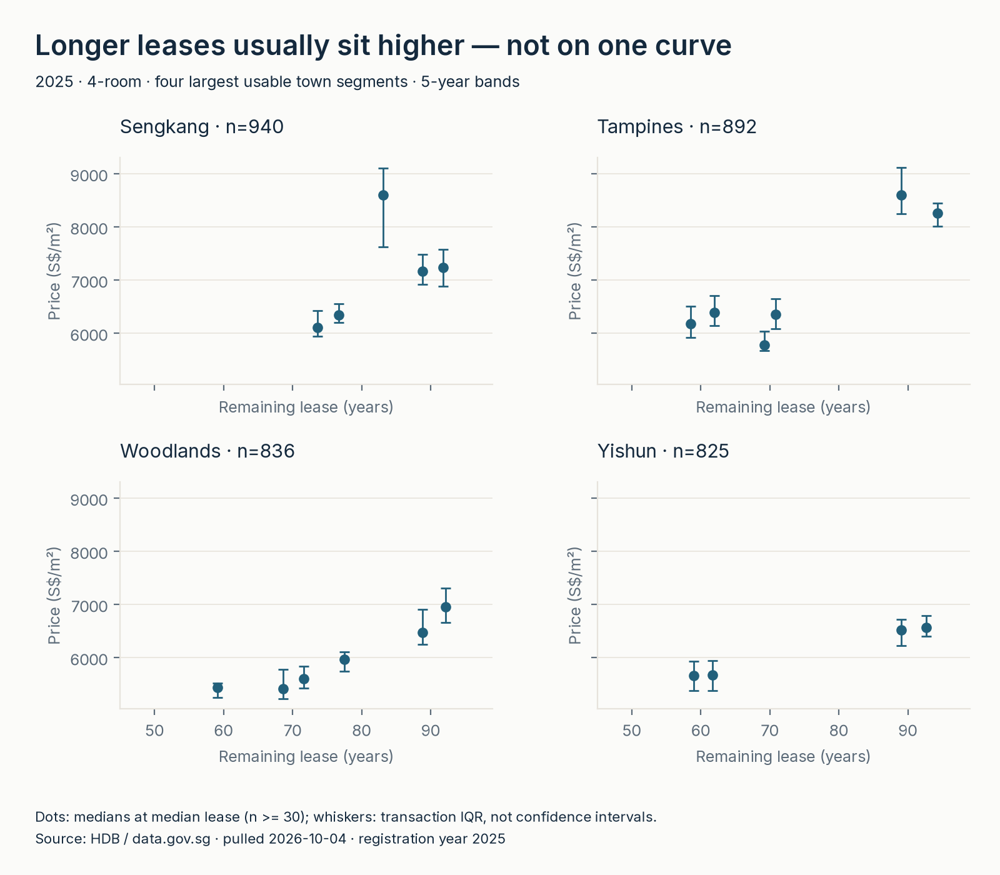
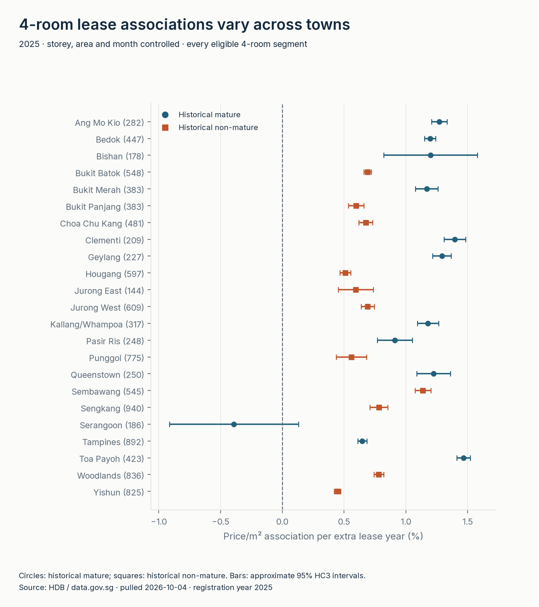
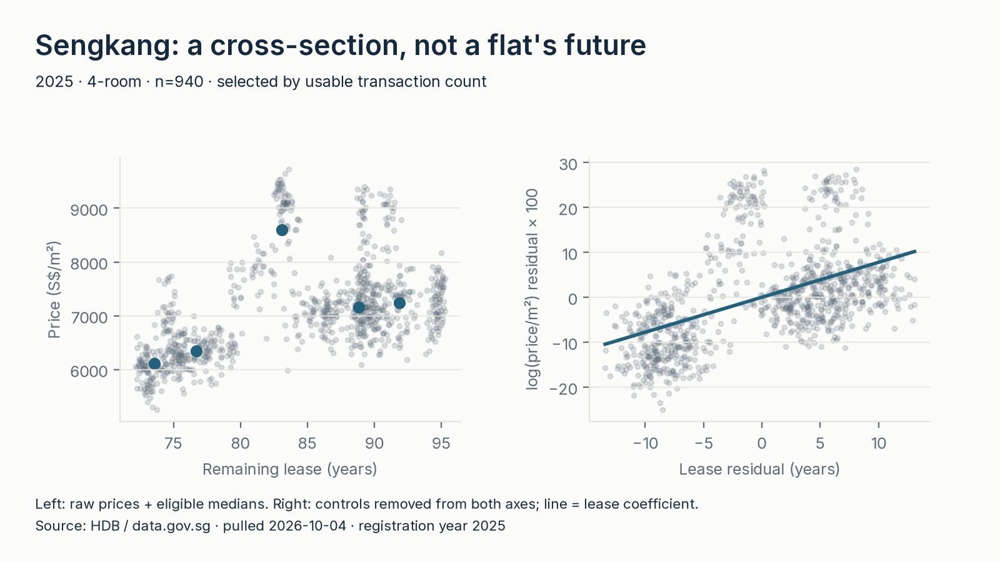

HDB resale registrations via data.gov.sg · 2025 cross-section · 6 of 6
Longer leases usually sit higher—not on one common curve
In 2025, the median controlled price/m² association per extra remaining-lease year is +1.20% across eligible historical mature-town segments versus +0.69% across historical non-mature segments. Restricting both groups to 4-room flats gives +1.20% versus +0.67%. These are unweighted segment medians of cross-sectional associations, not a national pooled estimate, a causal lease curve or an individual flat's annual depreciation rate.

More views


Method: bands first, guarded associations second
- Validate and preserve the raw ledger. Independently acquire the official HDB 2017-onward file; validate shape/history and byte hashes before replacement. Retain repeat-looking transactions because there is no unique unit or transaction ID. The reviewed snapshot has 241,920 rows: 241,919 retained and one inconsistent lease excluded, January 2017–partial October 2026. Byte receipt · audit.
- Parse the precision the source actually has. Convert reported years/months to months; valid range 1–1,188. Compare with a January-start 99-year lease expectation; retain offsets −12 through +18 months because commencement month and source precision differ. This is an analyst QC screen, not an official maximum reporting lag. The one −179-month mismatch is excluded, not corrected or proved erroneous. Strict 0–12 sensitivity is separate. SQL staging.
- Compare within one complete year. Use 2025 with all 12 registration months; form town × type × year five-year-band medians/IQR. Display only n≥30: 235 of 639 bands, 20,766 plotted-support observations; 404 thin bands / 4,318 observations are suppressed only from display and can still enter eligible models. Bucket ledger.
- Fit guarded secondary OLS models. Separately by town × type: log(price/m²) on lease years, storey midpoint, floor area and registration-month indicators; centered continuous predictors, earliest observed month as reference (15 parameters with 12 months). Require n≥100, ≥10-year lease span, ≥6 months, full rank, residual df≥30, ≥0.5 years residual lease SD, scaled condition≤1e8 and no unit leverage. Convert β with 100×(exp(β)−1). HC3 normal-approximation intervals transform β±1.96×SE; not exact, simultaneous, clustered or prediction intervals. Coefficients, support and diagnostics.
- Compare historical groups, without a universal group effect. Fix the lookup to HDB's 20 August 2023 Annex A; no planning-area inference. The later Standard/Plus/Prime framework is project/location-level, not this town map. Compare unweighted eligible-segment medians and ranges, with a 4-room check for type composition. Month controls leave between-flat/vintage variation, not aging of one flat; vintage/block controls would largely absorb lease. Lookup · full rules and method.
Sensitivity and limits—what this report cannot say
The historical group-median ordering persists at model n=50/100/200, lease spans 5/10/15 years, in 2024 and under stricter lease screening. Membership changes: a stable median does not validate individual estimates or equalize support. All-type ranges overlap (historical mature −0.392% to +1.749%; non-mature +0.070% to +1.406%). Sensitivity tables and interpretation.
Do not multiply these slopes by years to forecast a flat's future price. Storey/area/month controls do not remove micro-location, block vintage, flat model, renovation/condition, buyer characteristics or selective resale. Observed resale transactions are not every flat or a repeated-unit panel. HC3 omits shared-block dependence and may understate uncertainty. No causal decay rate, historical-group cause, current-classification premium, loan/policy effect or individual value is established. Local bends remain: Sengkang's 80–<85-year band is above its 90–<95 band. No price estimator, causal curve or significance ranking is offered.
Reproduce
git clone https://github.com/faizsaifulnizam/hdb-lease-slope
cd hdb-lease-slope
uv venv --python 3.12.10
# Windows Git Bash: source .venv/Scripts/activate
# Linux/macOS: source .venv/bin/activate
uv pip install -r requirements.txt
python src/download.py
python src/build_dataset.py
python src/analysis.py
python src/figures.py
python -m unittest discover -s tests -p 'test_*.py' -v
python tests/smoke_test.py
python src/verify.py
# Local dependency-backed figure mirror/rollback check:
python tests/check_figure_publish.pyPinned environment: Python 3.12.10 / DuckDB 1.5.6 / NumPy 2.5.3 / matplotlib 3.11.2, bundled fonts. Spot-check group_summaries.csv: 2025 all-type medians 1.198415688496771 / 0.6892626163764862; 4-room 1.1967679273127365 / 0.674516986955109. Sengkang 70–<75: n=152 / S$6,112.8608187134505 per m².
A live source revision changes the snapshot; it is not an identity claim. Unchanged input bytes and metadata preserve the reviewed committed receipt time while the ignored pull manifest records actual acquisition time. CSV/PNG repeats were verified in the same pinned environment, not cross-platform pixel equality. Figure generation stages both reports/figures and docs/img in the existing rollback batch; ordinary swap failures, not whole-pipeline crash safety. One writer required. CI covers committed-artifact smoke and focused offline tests, not live acquisition/full analysis. Dated verification scope distinguishes private-archive reviews from the clean publication history; deployment is not claimed by local QA.
Read more
- Repository — answer-first README with full method, rules and limits
- Decision memo · Sensitivity · Data audit
- Committed outputs · Official dataset